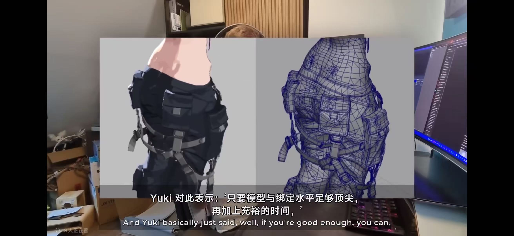

一、合集说明
写在前面：不是所有项目都能从想法走到上线发布，有些因为时间限制、方向调整或外部原因中途暂停。把这些方案集中记录在这里，一方面避免首页开发日志里出现大量"半截项目"，另一方面也能把做过的取舍、踩过的坑和可复用的资产沉淀下来，之后有新想法再回来延续。
本合集收录的范围包括：
- 因为时间、团队、外部条件限制中止的项目原型或参赛方案
- 做了一部分但后续方向有变化、不再继续推进的独立尝试
- 暂时搁置、有时间再回来延续的长期想法
已收录废案一览
废案一 · 多人音乐格斗对战
游戏Unity5天极限赛事
2025 CrazyWeb 参赛项目，原定是对标《罪恶装备》美术风格的大型3D音乐对战类游戏原型。
中止原因：策划案过于宏大，超出了短期赛事的时间上限，队伍中途解散。
个人职责：3D 美术，负责角色与场景的设计与制作。
废案一 · 多人音乐格斗对战（音乐类 3D 游戏原型）
1. 项目背景
该项目为 2025 年 CrazyWeb 开发比赛的参赛项目。最初的方向是一个大型3D音乐对战类游戏原型，节奏玩法 + 拳皇式多人对战的复合结构，美术风格原计划对标《罪恶装备》系列，追求偏华丽的视觉呈现与独特的角色语言。
我在团队中担任 3D 美术岗位，负责角色与场景的设计与制作；其他部分原定由队友分别承担策划撰写、玩法开发、音频处理等工作。
2. 技术栈
- Unity 引擎
- C# 脚本
- 音频处理 / 节奏检测 / 音乐可视化
- 风格化3D美术流程
3. 已完成的部分
- 角色与场景的初始美术方向定调（对标《罪恶装备》的风格化思路）
- 音乐系统雏形（音频加载播放、节奏检测、音效系统的初步结构）
- 基础节奏玩法骨架（节奏点击、分数系统、难度调整、连击机制的初始实现）
- 音乐可视化部分（频谱分析、粒子与灯光配合的初步效果）
4. 中止原因
核心问题出在策划案的体量与比赛周期不匹配。原策划目标定得过于宏大，叠加了 3D 对战、音乐节奏、多角色多关卡、多人对战等多条需求线，在短短几天的赛事周期里根本无法完成。随着时间推进，队伍对交付范围的共识越来越难达成，最终在中途解散，项目没有继续推进。
从结果回看，这类复合型项目如果参加短期比赛，更合理的做法是先锁死一小段可玩切片，再围绕这个切片反向收敛需求，而不是一开始就把多条玩法线同时铺开。
5. 留下的经验与可复用资产
- 短期赛事里"定好可交付边界"远重于"把所有想做的东西都塞进去"
- 节奏检测、音频频谱可视化的基础实现逻辑，之后做互动叙事或音画联动类项目可以直接复用
- 风格化 3D 角色美术对标《罪恶装备》方向的初步探索经验，后续角色项目可沿用
- 复合玩法（音乐 + 对战）拆分交付的思路，对之后的项目节奏判断很有帮助
6. 对标补记 · 关于《罪恶装备》系列的美术与布线方案
最近整理废案资料时又补了一轮《罪恶装备》的美术制作方法，尤其是社区最近重新讨论起来的"非标准布线思路"。这也是当初项目对标这个系列时我重点关注的方向之一——他们的模型与绑定方案，和国内常见项目组的做法有明显差异。
主流 3D 项目（尤其是国产项目）在角色布线阶段会优先考虑方便动作师绑定：尽量保持规整的四边面、关节环严格对齐、布线走向服务于拉伸形变，模型是"为了绑定而存在"。《罪恶装备》的思路则反过来——模型与布线的核心目标是优先服务美术最终画面效果。对于动作绑定需要的规整度，他们并不像主流项目那样执著，反而更看重卡线出来的边缘剪影、镜头里的造型张力，以及与卡通着色器的配合表现。
下面是最近看到的两张装备布线参考图，对比就能直观感受到差异：

装备布线参考一：卡线与走向不追求四边面规整度

装备布线参考二：绑定方案同样是"效果优先"的思路
从这两张参考图就能看出：他们的卡线走向、环的密度、边缘的处理都不会刻意迁就"动作师上手即绑"的需求，而是围绕最终渲染画面的美术表现力来做权衡。绑定也是相应地配套定制，而不是反过来让模型迁就绑定。
最近社区讨论这条线索时，配合下面这段 Arc System Works 关于美术制作流程的访谈一起看会更有感觉——里面详细讲了他们从模型、着色到后期的完整管线，对理解"为什么布成这样"很有帮助：
📺 参考视频 · Arc System Works 美术制作流程访谈
这条"美术效果优先、绑定随之定制"的方向，也是之后如果再重启风格化 3D 角色项目，我会优先尝试的路线。对个人项目或小规模团队来说，美术表现的权重本来就应该比工业化绑定流程更高。